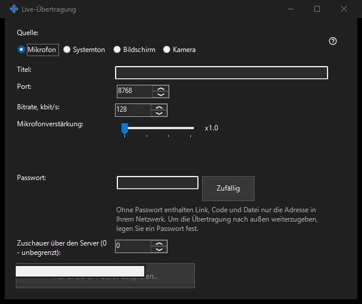

Liveübertragung
Verwendungszweck
Bildschirm, einzelnes Fenster, Kamera, Mikrofon oder Systemton aus Share Manager übertragen. Liveübertragungen im 64-Bit-Betrachter über Link, Code oder .fmsbcast-Datei öffnen. Die Aufnahme beginnt erst mit Start.


In dieser Reihenfolge
Quelle wählen, dann Monitor oder einzelnes Fenster beziehungsweise Kamera und Modus. Vor Start Titel, Zuschauerpasswort, Ton und LAN-Zugang prüfen. Zuschauer erhalten das gewählte Bild und den Ton, einschließlich sichtbarer privater Inhalte. Link kopieren oder .fmsbcast speichern, sobald die Sendung läuft. Stopp beendet die Sitzung; das Schließen eines aufgenommenen Fensters beendet auch dessen Sendung.
Die Elemente
Liveübertragung
Quelle wählen, dann Monitor oder einzelnes Fenster beziehungsweise Kamera und Modus. Vor Start Titel, Zuschauerpasswort, Ton und LAN-Zugang prüfen. Zuschauer erhalten das gewählte Bild und den Ton, einschließlich sichtbarer privater Inhalte. Link kopieren oder .fmsbcast speichern, sobald die Sendung läuft. Stopp beendet die Sitzung; das Schließen eines aufgenommenen Fensters beendet auch dessen Sendung.
Managereinstellungen · SFTP-Freigabeeinstellungen · Einstellungen des Austauschservers